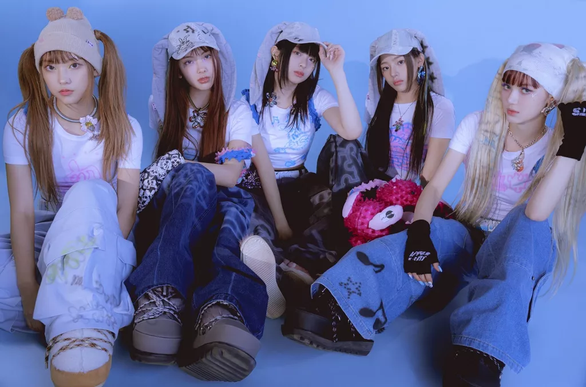

♡ ♡ ♡ ♡ ♡
IntegrantesNewJeans (hangul: 뉴진스) é um girl group sul-coreano formado pela ADOR, uma subsidiária da Hybe Corporation. O grupo é composto por cinco integrantes: Minji, Hanni, Danielle, Haerin e Hyein.
O significado do nome do grupo simboliza a determinação de criar uma nova tendência e liderar um novo caminho na indústria musical.
O nome do fandom internacional é Bunnies, que significa coelhos em inglês e pro fandom coreano é Tokki, que também é coelho.
O grupo lançou o videoclipe de seu single de estreia "Attention" em 22 de julho como um lançamento surpresa, sem nenhuma promoção ou informação prévia sobre a formação do grupo. O movimento foi descrito pela Billboard como "arriscado, mas revigorante", creditando seu sucesso a "uma ênfase na música antes de qualquer outra coisa". O vídeo, que acumulou mais de 1,3 milhão de visualizações em menos de 24 horas, foi seguido por um anúncio de seu primeiro extended play autointitulado contendo quatro faixas, incluindo dois singles adicionais. Em 23 de julho, o segundo single do grupo, "Hype Boy", foi lançado ao lado de um clipe de 50 segundos revelando os nomes dos membros, acompanhado por outros quatro videoclipes para a música, específicos para as perspectivas dos membros
Em 1 de agosto, o EP autointitulado de estreia do grupo foi lançado digitalmente, junto com seu terceiro single, "Cookie". O grupo fez sua estreia no M Countdown da Mnet em 4 de agosto, apresentando todos os três singles de seu EP.No primeiro dia de seu lançamento físico, New Jeans vendeu 262.815 cópias, quebrando vários recordes de estreia de girl group na Coreia do Sul. NewJeans estabeleceu o recorde de maior número de vendas de um álbum de estreia em sua primeira semana. Elas ganharam o prêmio de Melhor Novo Artista no Melon Music Awards de 2022.
NewJeans lançou "Ditto" em 19 de dezembro de 2022, como o primeiro single de seu primeiro álbum single, OMG. "Ditto" se tornou a música número um mais antiga no Circle Digital Chart da Coreia do Sul, liderando a parada por treze semanas.
OMG foi lançado em 2 de janeiro de 2023. Os críticos elogiaram o álbum por seu estilo retrô. Ele estreou como número um no Circle Album Chart, vendendo 700.000 cópias em sua primeira semana de lançamento. Tornou-se o primeiro álbum a vender mais de um milhão de cópias, pouco antes de New Jeans também atingir um milhão de cópias vendidas.
O grupo lançou seu segundo EP, Get Up, em 21 de julho de 2023. O EP estreou em segundo lugar no Circle Album Chart e vendeu 1,65 milhão de cópias em sua primeira semana de lançamento, tornando-se o terceiro álbum consecutivo do grupo.
O grupo também se apresentou no festival Lollapalooza em 3 de agosto, como sua primeira apresentação nos Estados Unidos.
Em 26 de setembro de 2023, a desenvolvedora de League of Legends, Riot Games, anunciou que NewJeans cantaria "Gods", o hino do Campeonato Mundial de League of Legends de 2023, que foi realizado na Coreia do Sul de 10 de outubro a 19 de novembro.
Attention
A primeira música do NewJeans é intitulada “Atention“. Com uma vibe R&B reminiscente e uma pitada de K-pop, é uma lufada de ar fresco para o verão de 2022.
Hype Boy
Hype Boy é a música que apresentou oficialmente ao mundo este grupo feminino de K-pop. O NewJeans continua a desbravar novos caminhos criando quatro videoclipes para a mesma música. As letras são adaptáveis, e a capacidade dos letristas de manter o público engajado é mostrada ainda pela variedade de enredos apresentados nos quatro videoclipes.
Cookie
Cookie é a quarta e última música do EP. Os sons frios e calmos do NewJeans já conquistaram mais de 10 milhões de visualizações em apenas um mês desde sua estreia.
NewJeans
uma música animada com influências de UK garage e Jersey club. O vídeo da música destaca sua parceria com as Meninas Super Poderosas. A faixa é marcada por batidas envolventes e um refrão cativante, além de um detalhe sutil, um som de tique-taque que lembra um relógio.
Super Shy
“Super Shy” é uma música confessional e tímida. Foi gravado o MV em Lisboa.
ETA
“ETA” se destaca com suas batidas dançantes e quebras de bateria.